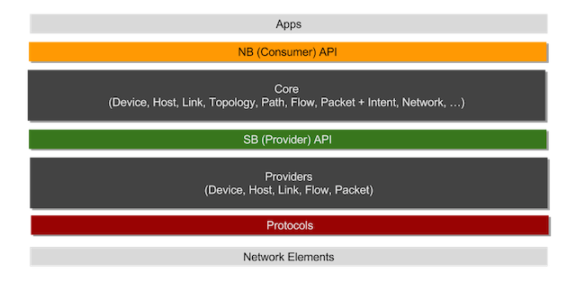
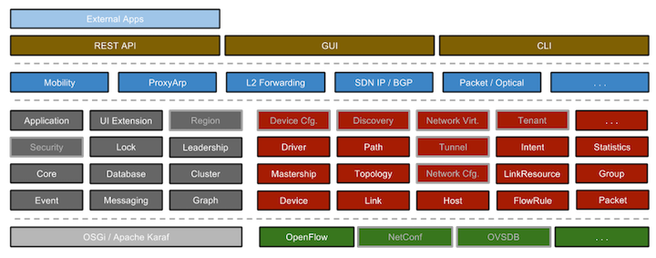
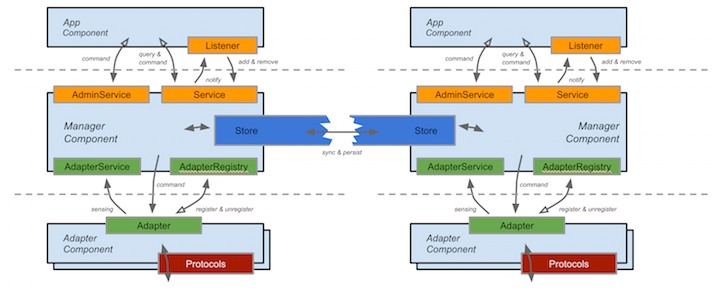

ONOS architecture is strictly segmented into a protocol-agnostic system
core tier and the protocol-aware providers tier as shown in
the figure below:

The ONOS core is responsible for tracking information about the network environment and distributing it to the applications either synchronously via query or asynchronously via listener callbacks. The core is also responsible for persisting select state and synchronizing state among the cluster peers.
The protocol-aware providers are responsible for interacting with the network environment using various control and configuration protocols and supplying such sensory data to the core. Some providers may also need to accept control edicts from the core and apply them to the environment using the appropriate protocol-specific means.
The figure below provides a visual inventory of the various ONOS subsystems.
The ones with the gray outline represent either work in progress features
planned for release in 2015.

The following diagram describes the general structure of each ONOS subsystem:

For example, the device-subsystem comprises of a core
{@link org.onosproject.net.device.impl.DeviceManager},
which exposes a north-bound
{@link org.onosproject.net.device.DeviceService} through which applications or other core components
can learn about the global infrastructure device inventory and through
which they can also subscribe for asynchronous {@link org.onosproject.net.device.DeviceEvent}
notifications via the {@link org.onosproject.net.device.DeviceListener} mechanism. A set of
administrative actions can be performed via {@link org.onosproject.net.device.DeviceAdminService},
e.g. setting mastership role, removing a decommissioned device.
On the south-bound side, the core {@link org.onosproject.net.device.impl.DeviceManager} exposes a {@link org.onosproject.net.device.DeviceProviderRegistry} through which any number of {@link org.onosproject.net.device.DeviceProvider} entities can register and in turn obtain a {@link org.onosproject.net.device.DeviceProviderService}. Device and port information can then be supplied to the core by each provider through the provider service issued to them. When a provider unregisters, its {@link org.onosproject.net.device.DeviceProviderService} will be invalidated and can no longer be used for interacting with the core.
Within the core, the tasks of indexing, persisting and synchronizing the global device and port state with the cluster peers falls on the {@link org.onosproject.net.device.DeviceStore}.
Similar structure applies to the link subsystem, host subsystem and others.
More information to come later...